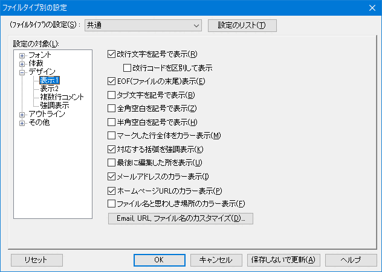

[HME0086A]
●mailto URLをクリックした時の動作がおかしい

- mailto:xxxx@yyyy.zzzz.co.jp?body=help をクリックすると、To: がxxxx@yyyy.zzzz.co.jpの、本文が空のメールが作成されます。本文には、「help」と入るはずなのですが?

-
秀丸エディタ上でどのように認識しているかにより、動作が異なります。
- メールアドレスとして認識している場合は、本文なしの空メールが作成されます。
- URLとして認識している場合は、本文に「help」と入ったメールが作成されます。
- [補足]
-
「その他」→「ファイルタイプ別の設定」→「デザイン」→[表示1]で、「メールアドレスのカラー表示」、「ホームページURLのカラー表示」のON/OFFが可能です。
